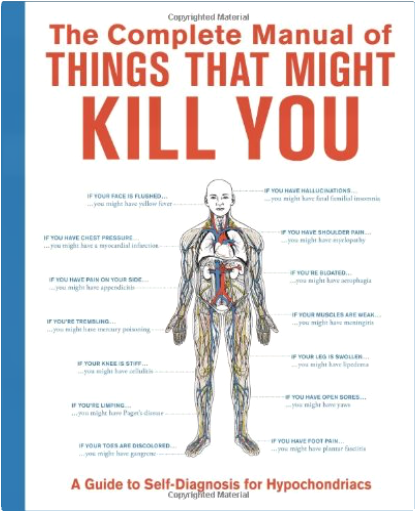The Complete Manual of Things That Might Kill You: A Guide to Self-Diagnosis for Hypochondriacs As a hypochondriac, you've had to satisfy your need for self-diagnosis with medical reference materials written for the masses until now. Dedicated entirely to your unique perspective on health, this revolutionary book outlines the world's worst maladies, conveniently organized according to your symptoms (real or imagined). You're going to die of something—why not choose an ailment that's rare and hard to pronounce? 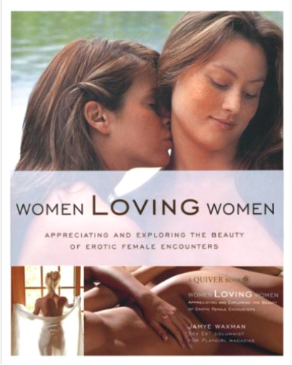Women Loving Women Get her at your fingertips! Women Loving Women is an 8inches x .375inches x 10inches softbound book. The 126-page book explains the beauty of women and the reason why women love other women. Written by Jamye Waxman, this book contains in depth chapters on not only the sexual encounters that can heighten your own sexual awareness, but also the deeper more intimate connection felt between women. With soft color photography and quotes from both men and women along the way, explains how situations have made them aroused and empowered. Experience the physical, romantic, and erotic beauty of women loving women! 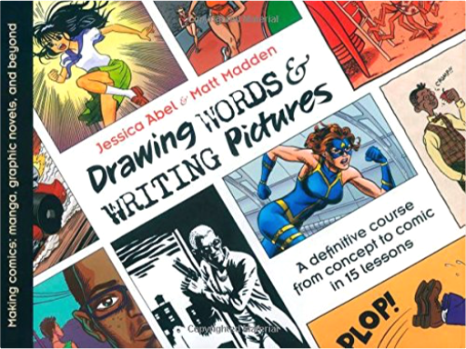Drawing Words and Writing Pictures: Making Comics: Manga, Graphic Novels, and BeyondJessica Abel, Matt Madden "A gold mine of essential information for every aspiring comics artist. Highly recommended." —Scott McCloud
Drawing Words and Writing Pictures is a course on comic creation - for college classes or for independent study - that centers on storytelling and concludes with making a finished comic. With chapters on lettering, story structure, and panel layout, the fifteen lessons offered - each complete with homework, extra credit activities and supplementary reading suggestions - provide a solid introduction for people interested in making their own comics. Additional resources, lessons, and after-class help are available on the DW-WP website. 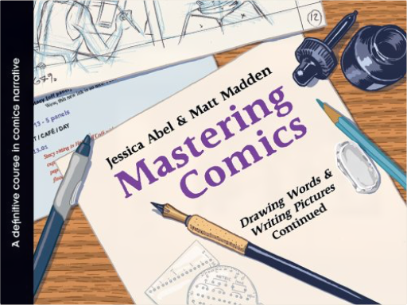Mastering Comics: Drawing Words & Writing Pictures ContinuedJessica Abel, Matt Madden A new course of material to accompany First Second's widely acclaimed 2008 comics textbook.
In their hotly anticipated follow-up to 2008's comics textbook Drawing Words & Writing Pictures, School of Visual Arts cartooning professors Matt Madden and Jessica Abel bring their expertise to bear on the "second semester" of a course of study for the budding cartoonist.
Covering advanced topics such as story composition, coloring, and file formatting, Mastering Comics is a vital companion to the introductory content of the first volume. 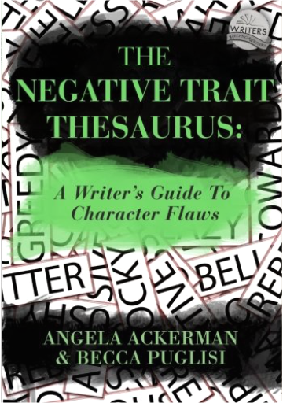The Negative Trait Thesaurus: A Writer's Guide to Character FlawsAngela Ackerman, Becca Puglisi Crafting likable, interesting characters is a balancing act, and finding that perfect mix of strengths and weaknesses can be difficult. But the task has become easier thanks to The Negative Trait Thesaurus.
Through its flaw-centric exploration of character arc, motivation, emotional wounds, and basic needs, writers will learn which flaws make the most sense for their heroes, villains, and other members of the story's cast. Inside The Negative Trait Thesaurus you'll find:
* A vast collection of flaws to explore when building a character's personality. Each entry includes possible causes, attitudes, behaviors, thoughts, and related emotions
* Real examples from literature, film, or television to show how each flaw can create life challenges and relational friction
* Advice on building layered and memorable characters from the ground up
* An in-depth look at backstory, emotional wounds, and how pain warps a character's view of himself and his world, influencing behavior and decision making
* A flaw-centric exploration of character arc, relationships, motivation, and basic needs
* Tips on how to best show a character's flaws to readers while avoiding common pitfalls
* Downloadable tools to aid writers in character creation
Written in list format and fully indexed, this brainstorming resource is perfect for creating deep, flawed characters that readers will relate to. The Negative Trait Thesaurus sheds light on your character's dark side. 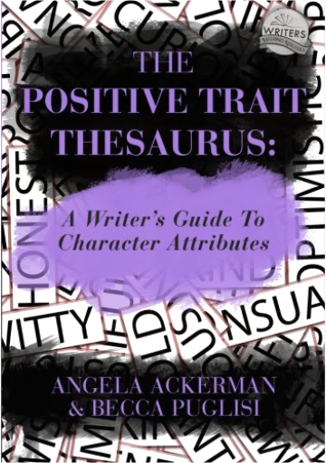The Positive Trait Thesaurus: A Writer's Guide to Character AttributesAngela Ackerman, Becca Puglisi It's a writer's job to create compelling characters who can withstand life's fallout without giving up. But building authentic, memorable heroes is no easy task. To forge realistic characters, we must hobble them with flaws that set them back while giving them positive attributes to help them achieve their goals. So how do writers choose the right blend of strengths for their characters—attributes that will render them admirable and worth rooting for—without making it too easy for them to succeed?
Character creation can be hard, but it's about to get a lot easier.
Inside The Positive Trait Thesaurus, you'll find:
* A large selection of attributes to choose from when building a personality profile. Each entry lists possible causes for why a trait might emerge, along with associated attitudes, behaviors, thoughts, and emotions
* Real character examples from literature, film, or television to show how an attribute drives actions and decisions, influences goals, and steers relationships
* Advice on using positive traits to immediately hook readers while avoiding common personality pitfalls
* Insight on human needs and morality, and how each determines the strengths that emerge in heroes and villains alike
* Information on the key role positive attributes play within the character arc, and how they're vital to overcoming fatal flaws and achieving success
* Downloadable tools for organizing a character's attributes and providing a deeper understanding of his past, his needs, and the emotional wounds he must overcome
If you find character creation difficult or worry that your cast members all seem the same, The Positive Trait Thesaurus is brimming with ideas to help you develop one-of-a-kind, dynamic characters that readers will love. Extensively indexed, with entries written in a user-friendly list format, this brainstorming resource is perfect for any character creation project. 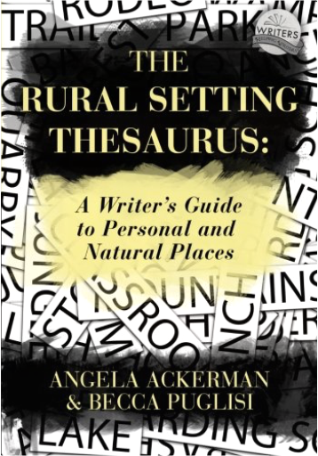The Rural Setting Thesaurus: A Writer's Guide to Personal and Natural PlacesAngela Ackerman, Becca Puglisi Within the pages of a book exists a world drawn from a writer’s deepest imaginings, one that has the ability to pull readers in on a visceral level. But the audience’s fascination will only last if the writer can describe this vibrant realm and its inhabitants well. The setting achieves this by offering readers a unique sensory experience. So much more than stage dressing, the setting can build mood, convey meaning through symbolism, drive the plot by creating challenges that force the hero to fight for what he wants, and trigger his emotions to reveal his most intimate feelings, fears, and desires.
Inside The Rural Setting Thesaurus, you’ll find: A list of the sights, smells, tastes, textures, and sounds for over 100 settings revolving around school, home, and naturePossible sources of conflict for each location to help you brainstorm ways to naturally complicate matters for your charactersAdvice on the many effective ways to build mood, helping you steer both the character’s and readers’ emotions in every sceneInformation on how the setting directly influences the plot by acting as a tuning fork for what a character needs most and by testing his dedication to his goalsA tutorial on figurative language and how different descriptive techniques can bring settings alive for readers while conveying a symbolic message or deeper meaningA review of the challenges that arise when writing description, as well as special considerations that apply specifically to rural and personal settings
The Rural Setting Thesaurus takes “show-don’t-tell” to new heights. It offers writers a roadmap to creating fresh setting imagery that impacts the story on multiple levels while keeping readers engaged from the first page to the last. 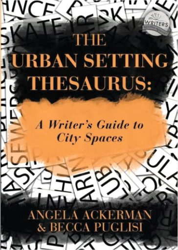The Urban Setting Thesaurus: A Writer's Guide to City SpacesAngela Ackerman, Becca Puglisi Making readers care and feel like they’re part of the story should be the number one goal for all writers. Ironically, many storytellers fail to maximize one of fiction’s most powerful elements to achieve this: the setting. Not only can the right location become a conduit for emotion, it can also provide conflict, characterize the story’s cast, reveal significant backstory, and trigger the reader’s own emotional memories through sensory details and deep point of view.
Inside The Urban Thesaurus, you’ll find: A list of the sights, smells, tastes, textures, and sounds for over 120 urban settingsPossible sources of conflict for each location to help you brainstorm ways to naturally complicate matters for your charactersAdvice on how to make every piece of description count so you can maintain the right pace and keep readers engagedTips on utilizing the five senses to encourage readers to more fully experience each moment by triggering their own emotional memoriesInformation on how to use the setting to characterize a story’s cast through personalization and emotional values while using emotional triggers to steer their decisionsA review of specific challenges that arise when writing urban locations, along with common descriptive pitfalls that should be avoidedDownloadable tools to help you plan each setting so you can choose the right one for a scene, providing the biggest storytelling punch
The Urban Setting Thesaurus helps you tailor each setting to your characters while creating a realistic, textured world readers will long to return to, even after the book closes. 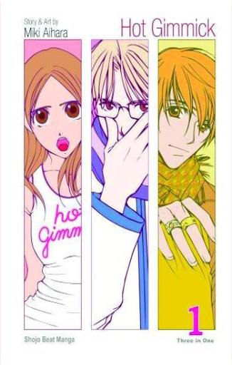Hot Gimmick, Vol. 1Miki Aihara R to L (Japanese Style)
In company-owned rabbit-hutch apartments live tenants who can't afford to live anywhere else, and the apartment complex in which high-school girl Hatsumi Narita lives is ruled over by the rumor mongering, self-righteous Mrs. Tachibana. Get on Tachibana's bad side, and life becomes hell. When Hatsumi has to buy a pregnancy test because her popular sister Akane is late, Mrs. Tachibana's son, Ryoki, who used to bully Hatsumi as a kid, promises not to tell the world about Hatsumi's secret, only if she becomes his slave. Suddenly Azusa, Hatsumi's protector in their youth, reappears to save her again! He's moving back into the neighborhood! Despite the budding romance between Hatsumi and Azusa, Ryoki has control over her through the secret that could ruin the lives of everyone in Hatsumi's family, and he hasn't forgotten who his slave is!
Hatsumi is a sensible and mild-mannered young girl, but she suddenly finds herself in a swirl of drama that threatens to drive her totally crazy. Her younger sister is a shameless flirt and might be pregnant. [Oh no!] An old friend is back in town and is now a famous (and hot) fashion model.[Swoon...]Her neighbor is a bully and is blackmailing her to be his love slave. [Hate him!!]And this is just the beginning! Miki Aihara turned the manga world upside down with her salacious, outrageous, and funny hit series. If you think being a teenager in America is hard, wait until you read Hot Gimmick. These Tokyo boys and girls are really messed up! 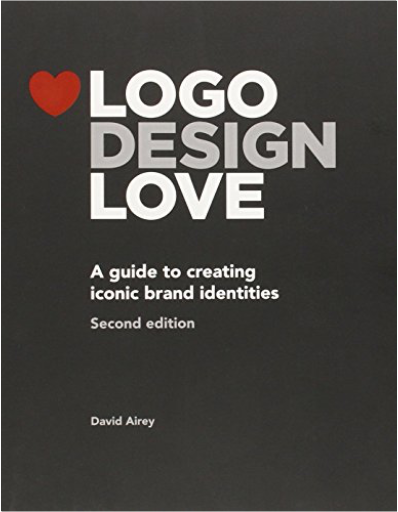Logo Design Love: A Guide to Creating Iconic Brand Identities, 2nd EditionDavid Airey Completely updated and expanded, the second edition of David Airey's Logo Design Love contains more of just about everything that made the first edition so great: more case studies, more sketches, more logos, more tips for working with clients, more insider stories, and more practical information for getting the job and getting it done right.
In Logo Design Love, David shows you how to develop an iconic brand identity from start to finish, using client case studies from renowned designers. In the process, he reveals how designers create effective briefs, generate ideas, charge for their work, and collaborate with clients. David not only shares his personal experiences working on identity projects - including sketches and final results of his own successful designs - he also uses the work of many well-known designers such as Paula Scher, who designed the logos for Citi and Microsoft Windows, and Lindon Leader, creator of the current FedEx identity, as well as work from leading design studios, including Moving Brands, Pentagram, MetaDesign, Sagmeister & Walsh, and many more.
In Logo Design Love, you'll learn:Best practices for extending a logo into a complete brand identity systemWhy one logo is more effective than anotherHow to create your own iconic designsWhat sets some designers above the rest31 practical design tips for creating logos that last 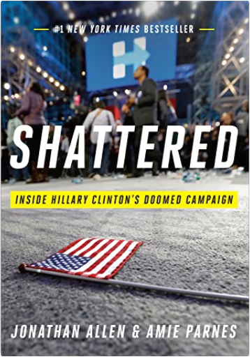Shattered: Inside Hillary Clinton's Doomed CampaignJonathan Allen, Amie Parnes #1 NEW YORK TIMES BESTSELLER
It was never supposed to be this close. And of course she was supposed to win. How Hillary Clinton lost the 2016 election to Donald Trump is the riveting story of a sure thing gone off the rails. For every Comey revelation or hindsight acknowledgment about the electorate, no explanation of defeat can begin with anything other than the core problem of Hillary's campaign—the candidate herself.
Through deep access to insiders from the top to the bottom of the campaign, political writers Jonathan Allen and Amie Parnes have reconstructed the key decisions and unseized opportunities, the well-intentioned misfires and the hidden thorns that turned a winnable contest into a devastating loss. Drawing on the authors' deep knowledge of Hillary from their previous book, the acclaimed biography HRC, Shattered offers an object lesson in how Hillary herself made victory an uphill battle, how her difficulty articulating a vision irreparably hobbled her impact with voters, and how the campaign failed to internalize the lessons of populist fury from the hard-fought primary against Bernie Sanders.
Moving blow-by-blow from the campaign's difficult birth through the bewildering terror of election night, Shattered tells an unforgettable story with urgent lessons both political and personal, filled with revelations that will change the way readers understand just what happened to America on November 8, 2016. |

 Made with Delicious Library
Made with Delicious Library